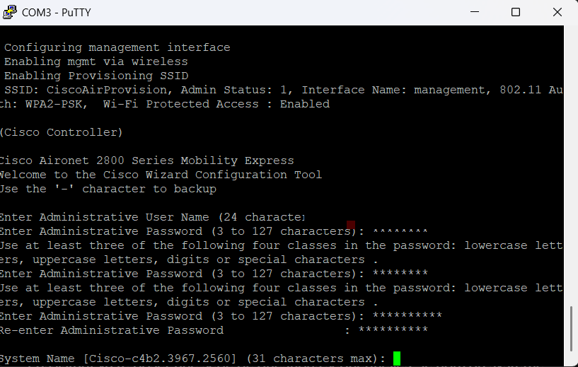
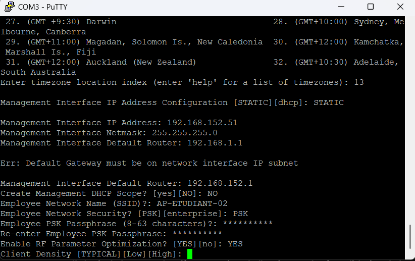

01Contexte et objectifs
Le but : déployer un accès Wi-Fi pour les collaborateurs et un réseau invité isolé, où chaque visiteur doit s'authentifier sur une page web avant d'accéder à Internet.
- réinitialiser la borne et la configurer depuis zéro ;
- lui donner une IP de management fixe, sans perturber le DHCP existant ;
- créer un SSID sécurisé, puis un réseau invité
AP-INVITEavec portail captif ; - rédiger une procédure réutilisable.
02Étapes de réalisation
- Réinitialisation d'usine
Bouton MODE maintenu pendant la remise sous tension, puis 5 à 10 minutes de redémarrage. La borne diffuse ensuite le SSID temporaire
CiscoAirProvision. - Assistant de configuration en console série (PuTTY)
Connexion sur le port console (COM3), puis l'assistant Mobility Express : compte administrateur, nom du système, fuseau horaire, adressage de management.

FIG. 1Assistant Mobility Express en console (identifiant administrateur masqué pour la publication). - IP de management fixe, DHCP de la borne désactivé
Adresse statique, masque /24 et passerelle du réseau local. L'option « Create Management DHCP Scope » est refusée : le routeur assure déjà le DHCP.
- Réseau principal en WPA2-PSK
SSID et clé pré-partagée définis dans l'assistant. La borne redémarre et devient administrable par son interface web.
- Réseau invité et portail captif
Dans Wireless Settings > WLANs : WLAN
AP-INVITE, Guest Network activé, Captive Portal sur Internal Splash Page et Access Type sur Local User Account. Les comptes invités sont créés dans WLAN Users, avec une durée de vie limitée. Ils ne donnent aucun droit d'administration.
03Difficultés et solutions
L'assistant refusait la configuration : Err: Default Gateway must be on network interface IP subnet. La passerelle saisie n'appartenait pas au sous-réseau de l'IP de management.
Recalcul du sous-réseau : la passerelle a été corrigée pour être dans le même /24 que l'adresse de la borne, et l'assistant a continué.

Activer le serveur DHCP de la borne aurait créé deux serveurs DHCP sur le même réseau, avec des conflits d'adresses pour tout le LAN.
DHCP de la borne laissé désactivé, et le point est consigné dans la procédure comme point de vigilance.
04Résultat
Un client connecté à AP-INVITE est redirigé vers la page « Welcome to the Cisco wireless network ». L'accès Internet n'est ouvert qu'avec un compte invité valide.
La procédure rédigée (5 pages) se termine par une liste de points de vigilance : délai de réinitialisation, ne pas choisir « mesh », ne pas activer le DHCP, rattacher les comptes au profil AP-INVITE, définir leur durée de vie.
05Compétences du référentiel mobilisées
- B1.1Gérer le patrimoine informatiqueMettre en place et vérifier les niveaux d'habilitation (comptes invités sans droit d'administration)
- B1.5Mettre à disposition un service informatiqueDéployer un service · Tester côté client · Documenter pour les utilisateurs
06Documents
Dans la procédure publiée, les identifiants réels sont remplacés par des valeurs d'exemple.